Kora
Resina, muschio e pino. Vaso in cemento scanalato modellato a mano, coperchio sigillato con la ceralacca.
79,99 €Scopri Kora

0%
All'imbrunire, lungo il sentiero, qualcuno ha acceso cinque candele. Seguile fino alla radura.
Resina, muschio e pino. Vaso in cemento scanalato modellato a mano, coperchio sigillato con la ceralacca.
Cemento modellato a mano, cera di soia, stoppino in legno che crepita. Il coperchio è in legno massello.
Tre candele di soia senza vaso, modellate a spirale, con i petali di rosa dentro la cera.
Diciotto rose e margherite di cera, scolpite a mano. Accanto, lo Scrigno Fiorito: sette candele, nastro bordeaux, sigillo di ceralacca.
Due stoppini in legno in un solo vaso ovale di cemento. Per le stanze che chiedono due fiamme.
Vasi in cemento lavorati a mano, cera di soia, stoppini in legno. Spedizione gratuita in Italia.